Vault, Orbit and Starport are built. Everything is here.
New: Relay 0.3, the company chat and emergency Alert system that works outside company email: its own Azure server, everything encrypted at rest, Alerts texted to every phone, and people imported from Excel or CSV with one-time setup links. Orbit's admin console now shows Relay Alerts. Also new: lockdown and travel. Every server can now refuse everything except approved locations, the way an FTP server can be limited to listed addresses. A blocked company laptop offers a request form, pre-filled with the profile name, username, public IPv4 and IPv6 addresses and the date; travel requests add the countries and dates and set up the company cell phone. Everything is set once in Starbase, the new name of the CydVerse control panel. Orbit 0.1, the internal file server. It has shares with NTFS-style permissions, groups, drive letters assigned from the admin console, a File Explorer tab for admins, access requests and a file activity log. People reach it from anywhere without a VPN, through the same CydVerse Agent that serves Vault, each person's private drive. Starport 0.1 is the secure external drop and client portal. Launchpad is documented as a design. Everything below can be downloaded.
Starbase: the CydVerse control panel
One console for every server and site. It is designed, not built yet. Orbit, Vault and Starport already expose its API, so it can manage them on day one.
| Part | What it does |
|---|---|
| Console | The only admin console for every module and site, on the admin network, with MFA and the five roles. |
| Server agents | One on each CydVerse server, with a TPM key. They connect out to Starbase and accept only signed commands, so file servers have no admin port. |
| Device control | Every laptop's CydVerse Agent in one list. Kill one lost laptop in every module at once. |
| Blocking and lockdown | Countries, addresses, automatic blocks, and lockdown (no access except approved locations), pushed to Orbit, Vault and Launchpad. |
| Locations and travel | Requests sent from blocked agents and planned trips, emailed to the chosen addresses, then approved as dated travel passes that work in every module. |
| Company cell phones | Person, email, number and carrier. When someone on the list travels, the same request asks IT to set up the phone. |
| Alerts and reports | 58 alert types to email, Teams or a SIEM; the bad-actor report, connections and audit across every module; a read-only token for Ben. |
| Health and upkeep | Self-heal findings, backups, certificates and updates for every server. |
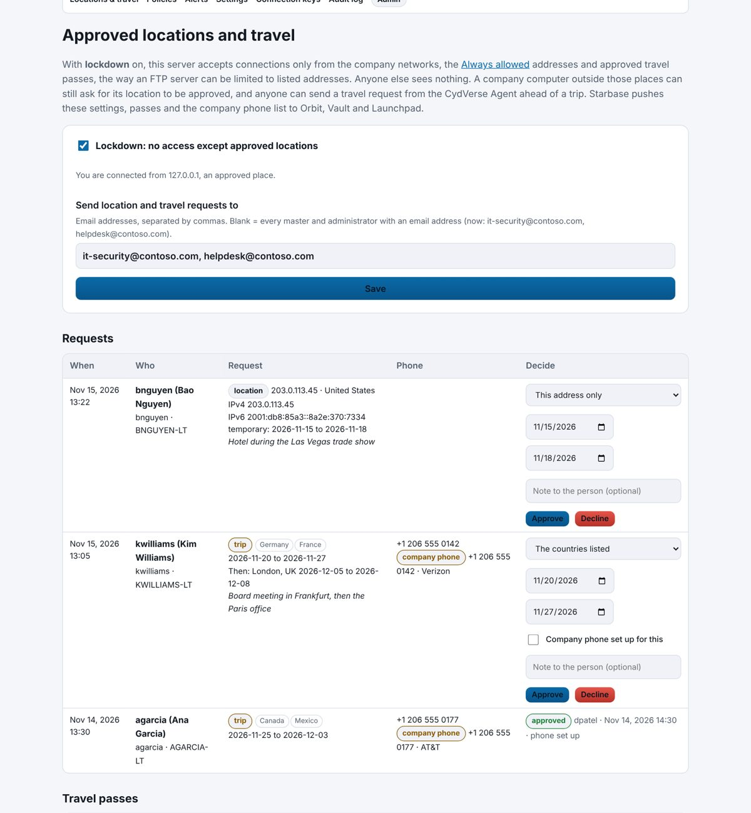
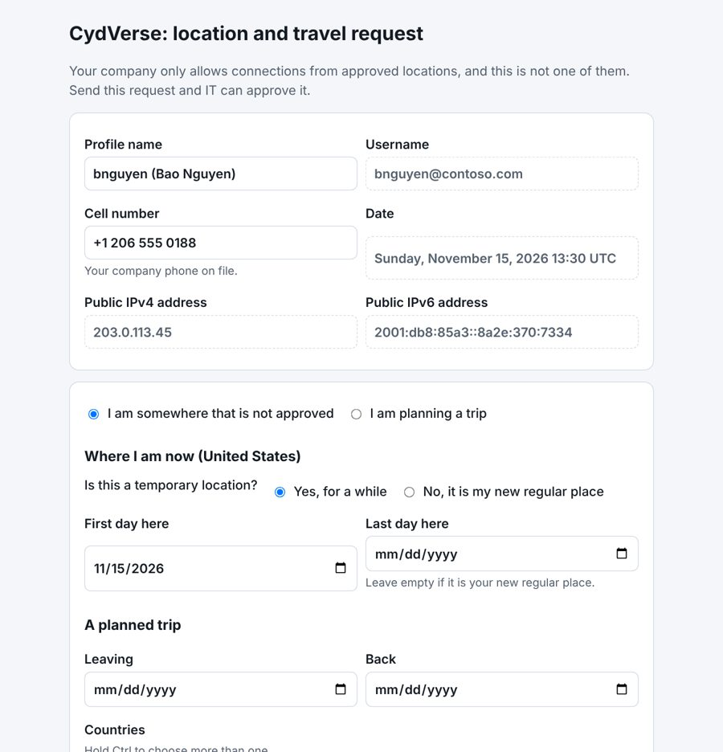
Orbit · internal file server
The server (a Windows service) and the CydVerse Agent, which now serves Vault and Orbit together and applies drive maps.
The same server on the FIPS 140-3 validated Go cryptographic module.
Entra, server, groups mapped from AD, shares, robocopy plus orbit import, cut-over, drive maps replacing logon scripts.
Shares, the Explorer tab, permissions, groups, drive maps, access requests, file activity, lockdown and travel, and the new Relay page.
What it is, the admin Explorer, drive maps, requests, activity, migrating from a Windows file server, safeguards, cost.
The one code base for Vault, Orbit and the CydVerse Agent, with tests and security reports.
240CDCA539061B2075D6BBFF21FD100F67B36A69F7A74F25DD17010E9BA143BF6DD31131991DC9CE888704D4A58E02C2AEDBBE873CEF77B2D9AC46F5BE8B7659D251457E0F66F5A512E5A6525F32245B5F8DC50BBA6702B230BB5F2B2B6D4ADEThe Windows parts (the Orbit folder in File Explorer, drive letters, network locations, Quick Access pins, TPM keys) compile and pass static analysis but still need a pilot on Windows 10 and 11. The builds are not code-signed yet.
Relay · company chat and emergency Alerts
Relay keeps the company connected when email or the office network is down. Global is the company feed, SideQuests are invite-only groups that end on a date, and Messages are one-to-one.
- Separate from email: its own Azure VM and its own accounts. Email is optional.
- Encrypted at rest: messages, files, emails, phone numbers, secrets and the audit log (AES-256-GCM). A key per conversation, destroyed when it ends; the master key in Azure Key Vault.
- Alerts by text: a pop-up on every screen until acknowledged, a text to every phone (Azure Communication Services or Twilio), and a pop-up in CydVerse.
- Import people from Excel or CSV (first name, last name, username, email, phone), with a preview and one-time setup links by text.
- Admin oversight with an encrypted audit log, and sign-in lockout.
The whole app with its install files (systemd, Caddy, Nginx, env template, backup script), the CydVerse connector and the AI-agent connector. The docs are separate downloads.
Azure layout, Ubuntu or Windows Server, the master key, SMS providers, optional email, import and setup links, backups, security notes.
Global, Alerts, SideQuests, files, looks; for admins: policy, people, import from Excel or CSV, oversight, SMS, audit log.
Why Relay, the three spaces, Alerts, separate and encrypted, import, oversight, CydVerse key, sizing, roadmap, decisions.
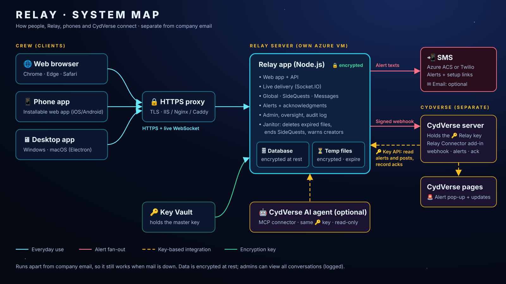
Tested against a live, encrypted Relay: Orbit's Relay page and CydVerse alerts flowing into Relay. Azure Communication Services texting is built to Microsoft's published signing rules but hasn't been tried on a real Azure resource yet; texting was tested end to end against a stand-in for Twilio.
Vault · personal drive for every person
The server (a Windows service) and the CydVerse Agent. The source code is in the Orbit section (one code base).
The same server built on the FIPS 140-3 validated Go cryptographic module. Use with crypto.requireFips.
Entra app registration and roles, server, TPM-sealed master key, publishing, pilot, rollout, Control Panel tokens, backups.
People, helpdesk and admins: devices, recycle bin, restore, deploy, groups, policies, blocking, bad actors, reports, alerts.
What it is, how a device gets in, screens, roles, safeguards, test proof, both network layouts, size and cost, next steps.
D3118F455166C66AF30266A926AE3A1155403952C962906B30840D0EEC06A5D0D251457E0F66F5A512E5A6525F32245B5F8DC50BBA6702B230BB5F2B2B6D4ADED109DDADD30653F4A6C11DB76E9D65B42295D213EBD2811F4A4547452936E480The Windows parts of the agent (TPM key, the Vault folder in File Explorer, starting at sign-in) compile and pass static analysis but still need a pilot on Windows 10 and 11. The builds are not code-signed yet.
Starport · external drop and client portal
The program. Runs as a Windows service with its own virtual account.
Windows prep, certificate, firewall, service, email, blocking, recovery key, tests and checklist.
Updated: password reset, email settings, blocking by country and address, and the bad-actor report.
Updated with accounts, blocking and bad actors, and the latest test results.
Ready to push to the GitHub repository when it exists.
74DDB939678B112857D7C74999237590652F7E3B85CAF384FB0586CD3A1C7898Infrastructure and overview
Sizing for Vault, Orbit, Starport and Relay (and Vault and Orbit on one host); equipment; Azure monthly costs; network rules; checklist.
The whole platform: modules, one agent, both secure layouts, blocking and bad actors, roles and alerts, phases.
Devices and the agent, the Control Panel, the four modules (three built) and shared security.
Edge firewall with IPS, DMZ with reverse proxy, internal firewall, LAN.
External IPS/WAF, hub with Azure Firewall Premium, private spokes.
Launchpad · FTP and SFTP server
Control Panel, server prep, installer, approval, FTP servers, firewall, logins, tests, sync mode.
Servers and logins, My servers with CydFTP, protocols and security, sync mode, sizing and costs.
Four ideas, how it works, screens, secure defaults, sync mode, migration, cost, delivery plan.
Planning workbook
Starport 0.1 status and how each feature is met or planned, with acceptance test results.
How it all works
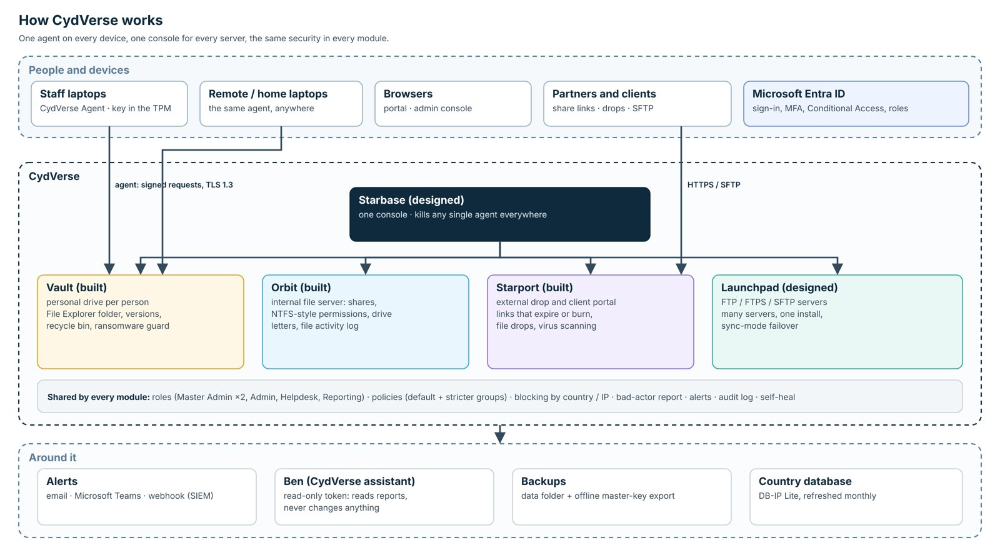
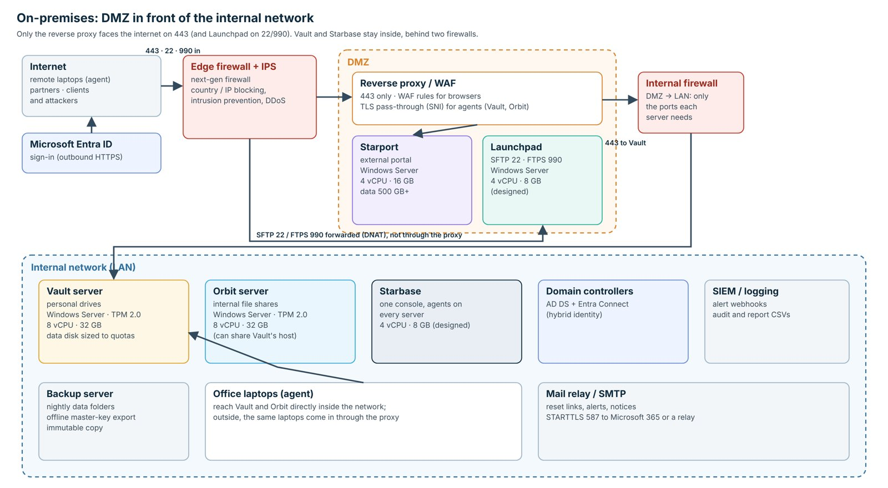
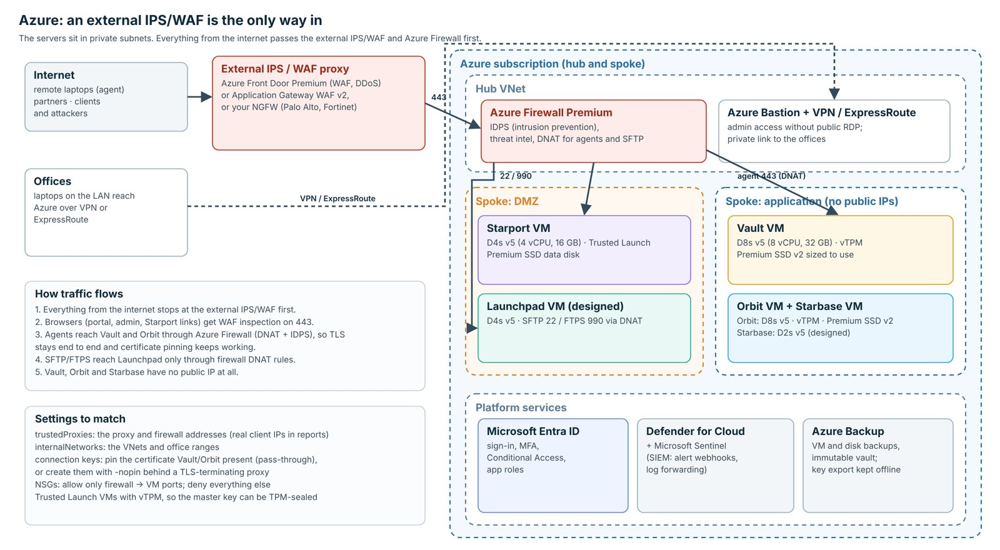
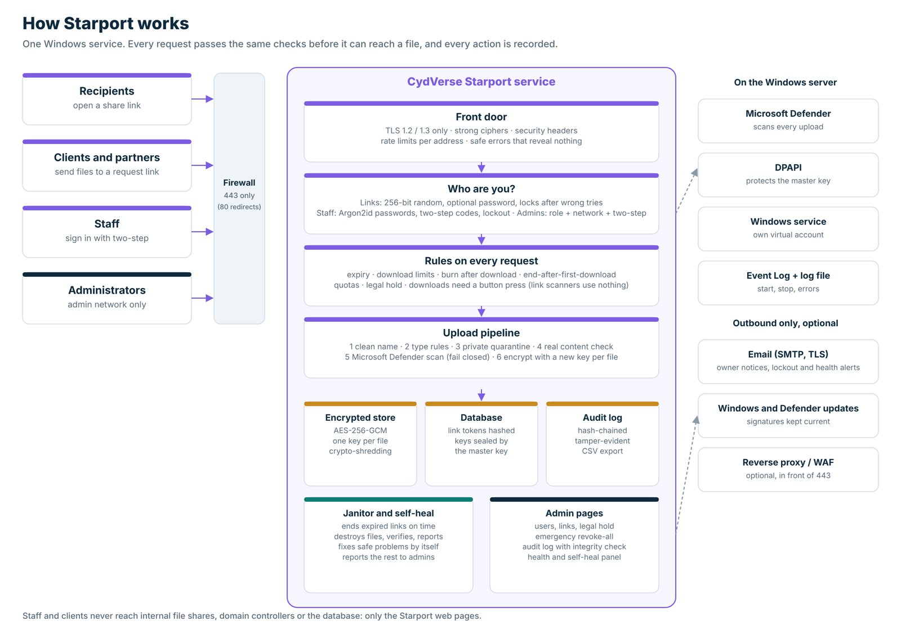
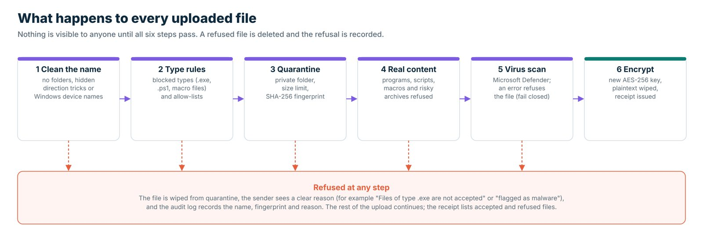
Tested, not just designed
| Check | Result |
|---|---|
| Two real agents syncing through the real server | Edits, renames, deletes, conflicts and restores all arrive |
| Stolen token, replayed request, altered upload, forged Microsoft token | All refused |
| One person reaching another's files; roles overstepping | All refused |
| Orbit permissions: deny beats allow, explicit allow beats inherited deny, stop inheriting | Same results as NTFS |
| Orbit hidden folders, revoked access, read-only person saving, checked-out files | Hidden stays hidden; revoked folders leave the device; saves refused and logged |
| Drive maps by group; a person without access | Letters applied; maps to folders they cannot open are skipped |
| Lockdown: outside address, signed request, approval, expiry | Refused; request emailed with IPv4/IPv6 and phone; pass works only where and when approved |
| A real agent blocked by lockdown | Form filled in, trip sent, approved, back in step |
| Ransomware-style changes from a device | Device frozen; vault restored to the minute before |
| Mass deletion on a device | Held back until a person confirms |
| 3 failed sign-ins, password spraying, impossible travel, blocked country | Detected, alerted, auto-blocked |
| Lost laptop revoked with erase | Local copy erased; later attempts logged and alerted |
| Self-service password reset | Single-use link; authenticator code required with two-step; no account enumeration |
| Starport workbook acceptance tests | 11 of 11 that apply pass |
| Relay: database copied off the server | Messages, files, emails, phones and audit details unreadable without the master key |
| Relay: SideQuest ended | Its key destroyed; its messages and files can no longer be read |
| Relay: wrong passwords, from one person and one address | Locked for 15 minutes; others through the same proxy unaffected |
| Relay: import from Excel and CSV, setup link reused | Bad rows skipped with reasons; link works once |
| Orbit's Relay page against a live Relay | Alerts, acknowledgments and activity shown; key never reaches the browser |
| Independent penetration test | To do before go-live |
Screens
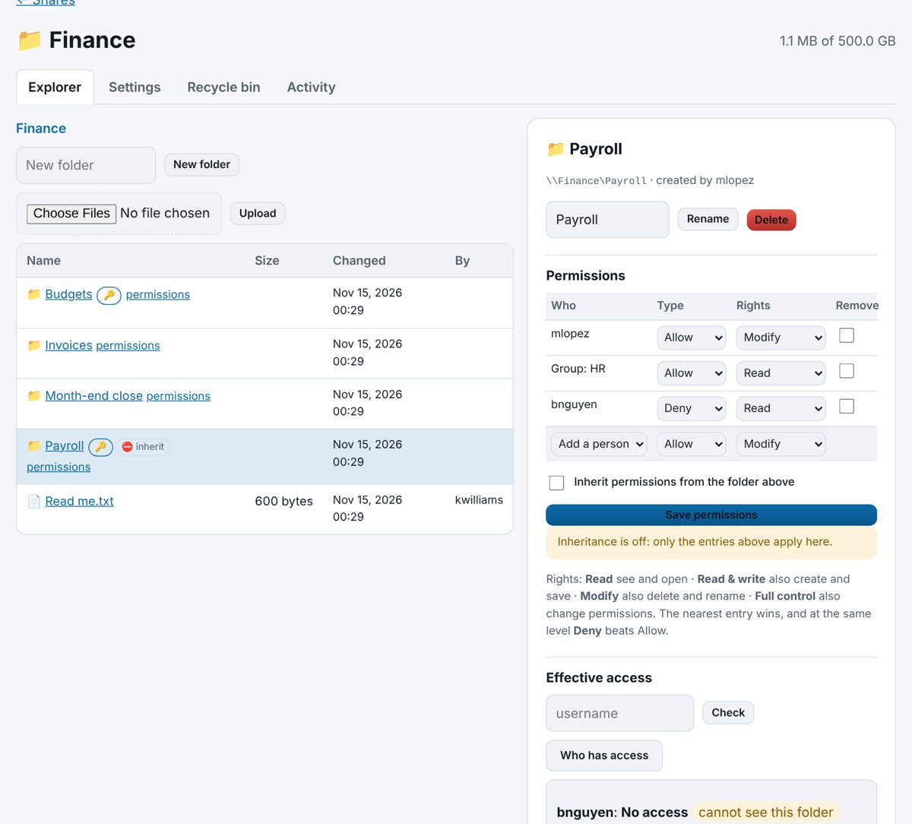
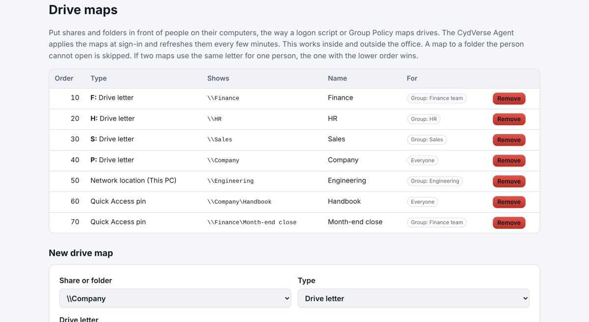
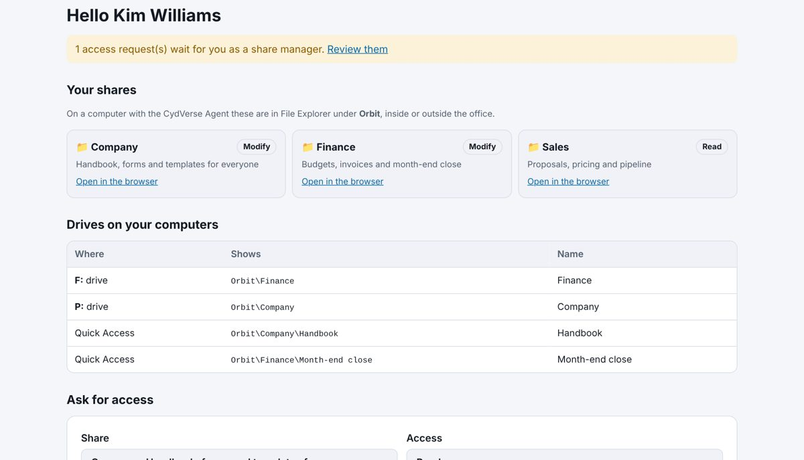
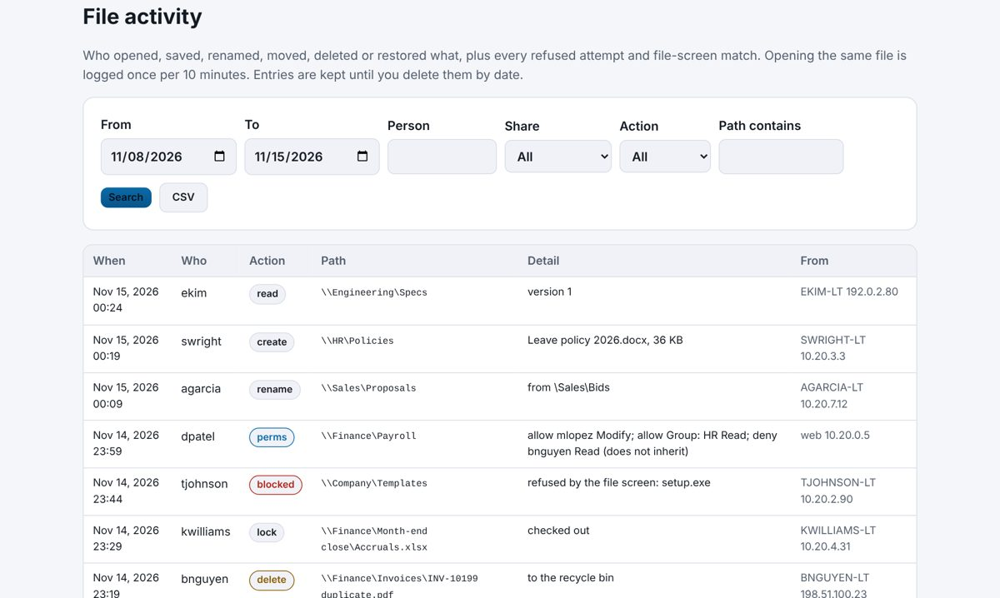
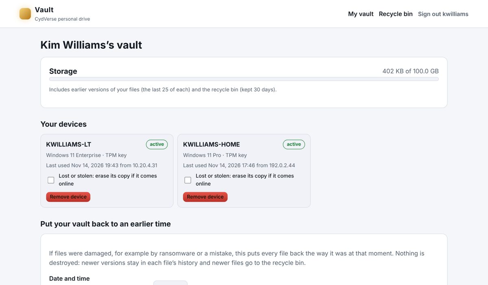
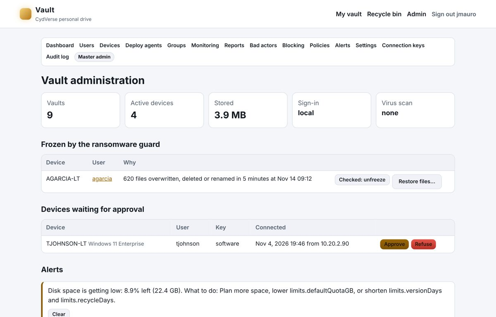
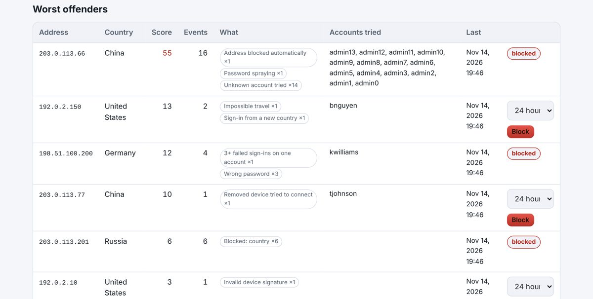
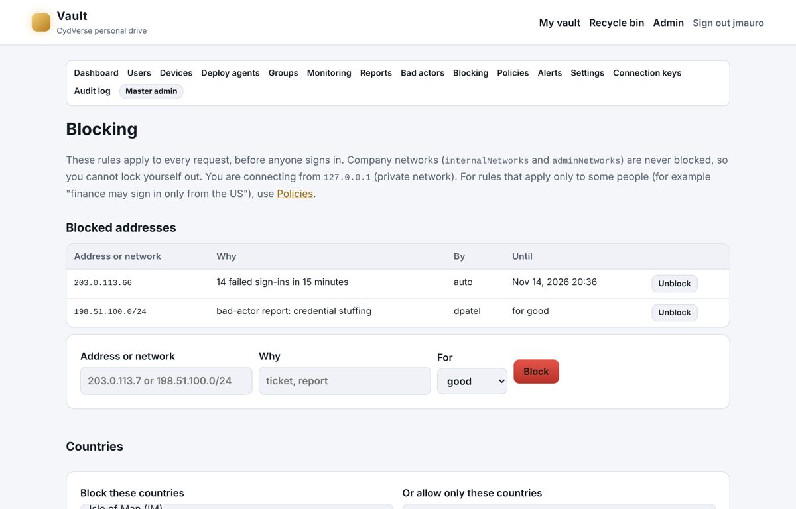
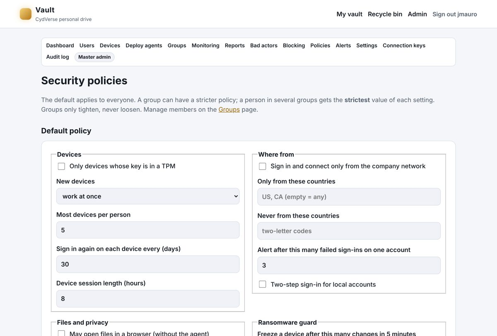
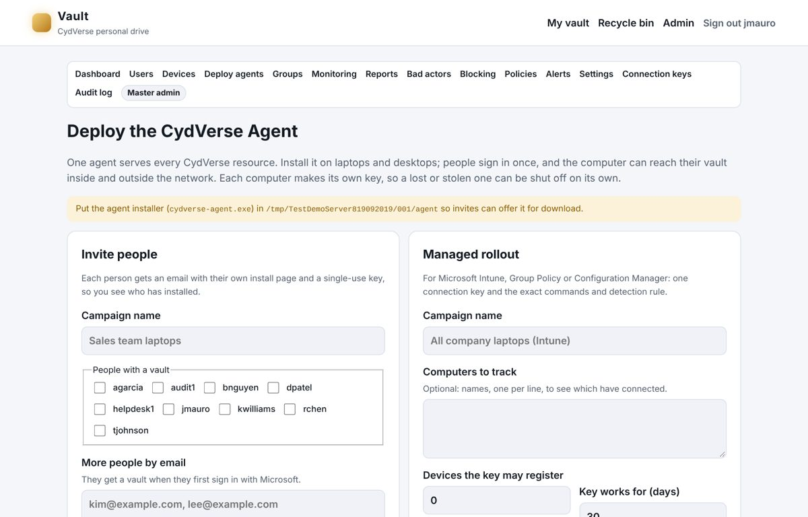
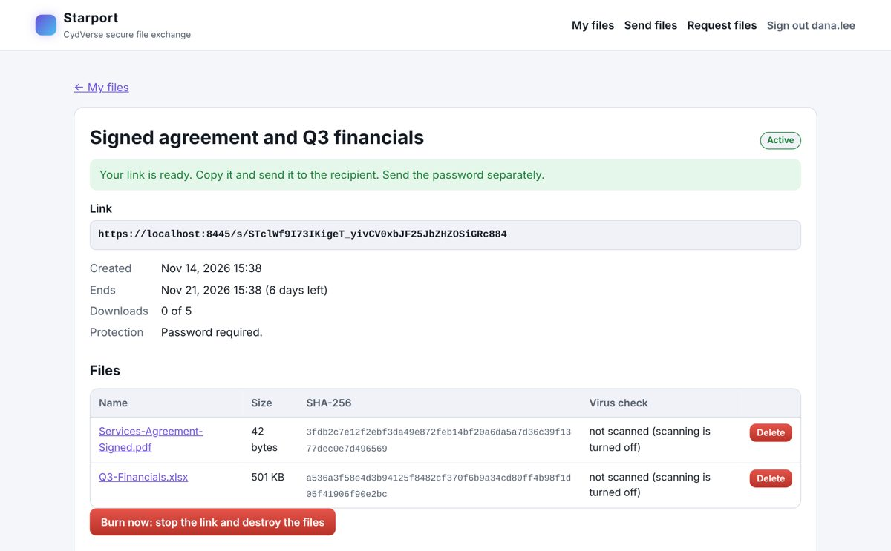
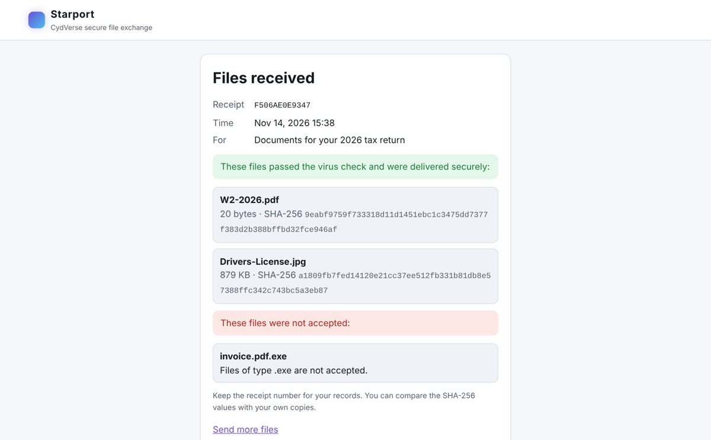
More CydVerse pages
Costs in the documents are estimates from late-2026 list prices; confirm them before buying. IP geolocation in Vault, Orbit and Starport by DB-IP (CC BY 4.0).